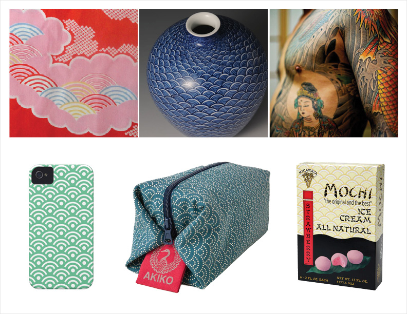
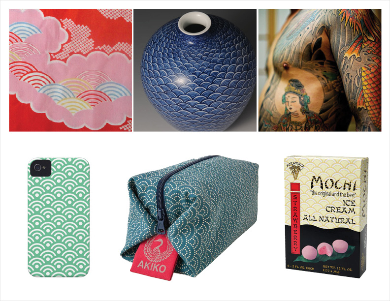

Seigaiha
Seigaiha is a decorative three-dimensional interpretation of the traditional Eastern wave pattern. 

Inspiration
The Seigaiha pattern, literally 'wave crest' in Japanese, is a traditional pattern that has become ubiquitous throughout East Asia and the world. Whether it be on traditional fabrics, ceramics, tattoos, and even modern products, it's form and application are always two-dimensional.
Profile Development
To ensure a modular fit, the two-dimensional profile was derived by exploring the spacing of a 4 x 4 matrix of overlapping circles.
Band Development
The number of equidistant front-facing bands was explored to find the optimal balance of detail and clarity.
Three-Dimensional Development
Various surface depths were explored for their effect on shadow and gradient. The chosen depth maintained both a two-dimensional graphic quality as well as a three-dimensional subtlety that rewards the careful viewer.
Production
The final design was 3D-printed using PLA plastic. Limitations of the 3D-printing process required its surface to be finished smooth using sandpaper. A paper box lined with impermeable tape was constructed to house the mould. With the mould prepared, white plastic compound was poured into the mould's void and allowed to cure.
Evocations
When assembled together, the depth and form of the tiles resembles scales of a fish as well as cresting ocean waves.